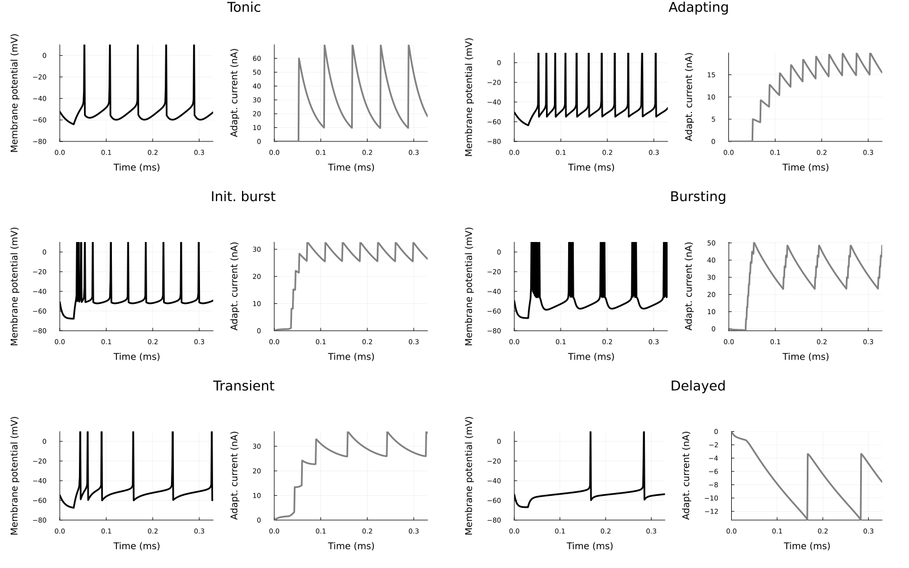
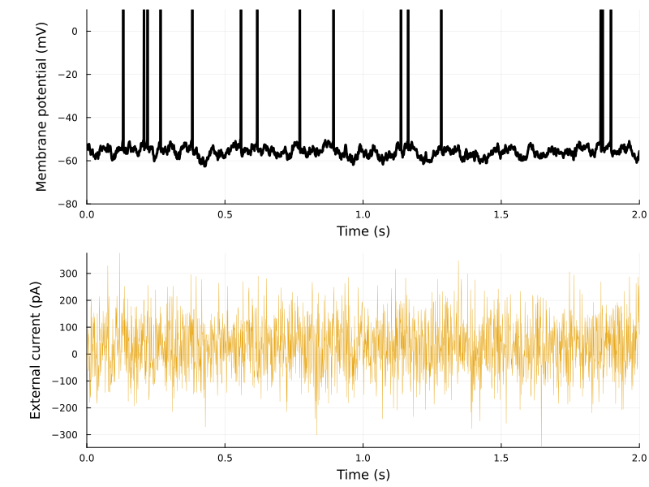
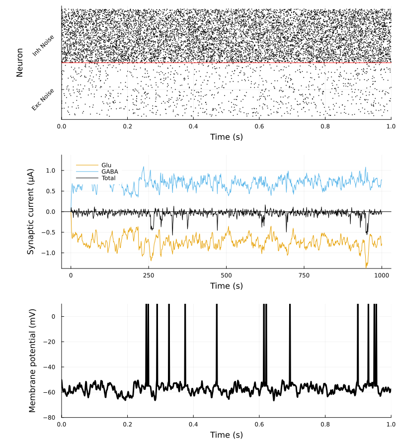
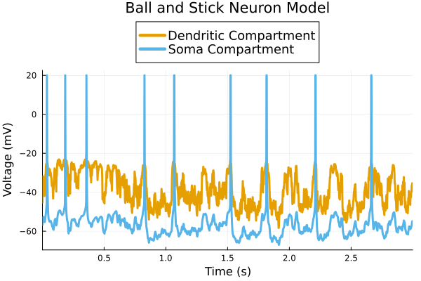
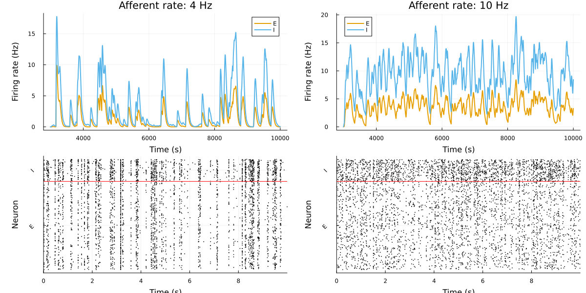
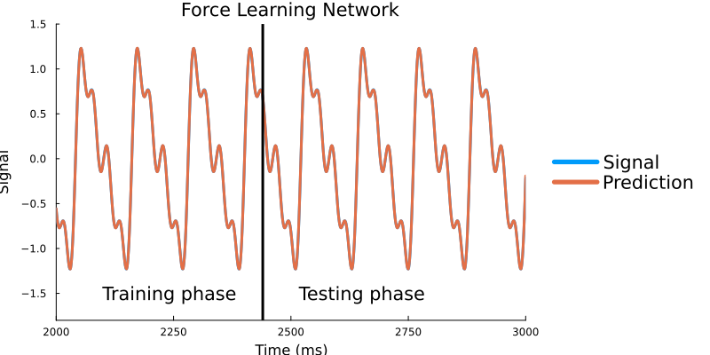

Tutorial
This tutorial shows how to build and run models with SpikingNeuralNetworks.jl. Each section is a self-contained script: it can be pasted in a Julia session in which SpikingNeuralNetworks (and CairoMakie, for the figures) is installed. The library offers many more models than the ones used here; they are described in the Model catalogue.
Longer scripts, including the ones that produced the figures in this page, are in the examples folder of the package. Some of those scripts still use the old Plots interface of SNNPlots; since SNNPlots 0.2 the plotting functions (vecplot, raster, ...) use Makie, as in the snippets below.
Every script starts by loading the library and the unit constants:
using SpikingNeuralNetworks # exports SNN, an alias of the module
SNN.@load_units # defines ms, mV, pA, nS, Hz, ... in the current scope
using CairoMakie # Makie backend used to render and save the figuresThe unit system is: time in ms, voltage in mV, current in pA, capacitance in pF, conductance in nS, resistance in GΩ, rates in kHz (Hz = 1e-3). Writing 20ms or 5nS therefore only documents the unit; the stored number is 20f0 or 5f0.
AdEx neuron
The adaptive exponential integrate-and-fire (AdEx) model (Brette and Gerstner, 2005) reproduces several firing patterns observed under direct current injection (AdEx firing patterns). The model has a membrane potential $V$ and an adaptation current $w$:
\[\begin{align} \tau_m \frac{dV}{dt} &= -(V - E_l) + \Delta_T \exp\left(\frac{V - \theta}{\Delta_T}\right) + R\,(I - w - I_{syn}) \\ \tau_w \frac{dw}{dt} &= a (V - E_l) - w \end{align}\]
The threshold $\theta$ relaxes to $V_t$ with time constant $\tau_A$ and is increased by $A_t$ after each spike (both from PostSpike; with the default At = 0 it stays at $V_t$). A spike is emitted when $V \geq 0$ mV: $V$ is set to 20 mV for that step, then reset to $V_r$ and held during the refractory period τabs; $w$ is incremented by $b$. AdExParameter is a subtype of AbstractGeneralizedIFParameter: the population AdEx can be combined with any synapse model (see Neuron models: integrate-and-fire family).
Changing the membrane time constant, the reset potential and the adaptation parameters gives different firing patterns:
using SpikingNeuralNetworks
SNN.@load_units
using CairoMakie
# (pattern, τm (ms), a (nS), τw (ms), b (pA), Vr (mV), I (pA))
patterns = [
("Tonic", 20, 0.0, 30.0, 60.0, -55.0, 65),
("Adapting", 20, 0.0, 100.0, 5.0, -55.0, 65),
("Init. burst", 5.0, 0.5, 100.0, 7.0, -51.0, 65),
("Bursting", 5.0, -0.5, 100.0, 7.0, -46.0, 65),
("Transient", 10, 1.0, 100, 10.0, -60.0, 65),
("Delayed", 5.0, -1.0, 100.0, 10.0, -60.0, 25),
]
fig = Figure(size = (900, 700))
for (n, (name, τm, a, τw, b, Vr, I)) in enumerate(patterns)
param = SNN.AdExParameter(
R = 0.5GΩ,
Vt = -50mV,
ΔT = 2mV,
El = -70mV,
τm = τm * ms,
Vr = Vr * mV,
a = a * nS,
b = b * pA,
τw = τw * ms,
)
E = SNN.AdEx(; N = 1, param)
SNN.monitor!(E, [:v, :fire, :w], sr = 8kHz)
model = SNN.compose(; E, silent = true)
E.I .= 5pA # weak current for 30 ms
SNN.sim!(; model, duration = 30ms)
E.I .= I * pA # current step
SNN.sim!(; model, duration = 300ms)
ax = Axis(fig[(n - 1) ÷ 2 + 1, (n - 1) % 2 + 1], title = name, ylabel = "V (mV)")
SNN.vecplot!(ax, E, :v, add_spikes = true, color = :black)
end
save(joinpath(mktempdir(), "AdEx_neuron_types.png"), fig)
Noise input current
In vivo, neurons are driven by noisy inputs. A simple description splits the input current in a deterministic and a stochastic component, $I = I^{det}(t) + I^{noise}(t)$, and the membrane dynamics of a generalized integrate-and-fire neuron reads
\[\tau_{m} \frac{d u}{ d t} = f(u) + R I^{det}(t) + R I^{noise}(t)\]
CurrentNoise implements such an input: at every time step it sets the target variable to I_base plus a fresh sample $\xi$ of the distribution I_dist. With α > 0 the new value is mixed with the previous one, $I \leftarrow (1-\alpha)(I_{base} + \xi) + \alpha I$, which makes the noise temporally correlated (see Stimuli). In the following example we:
- define a leaky integrate-and-fire neuron with
Population, which dispatches on the type ofparam; - define a
CurrentNoisewith a deterministic current of 30 pA and Gaussian fluctuations with standard deviation 100 pA; - attach it to the
:Ivariable of the population withStimulus(it returns aCurrentStimulus); - record, simulate and plot.
using SpikingNeuralNetworks
SNN.@load_units
using CairoMakie
using Distributions
if_neuron = (
param = SNN.IFParameter(R = 0.5GΩ, Vt = -50mV, El = -70mV, τm = 20ms, Vr = -55mV),
spike = SNN.PostSpike(),
synapse = SNN.SingleExpSynapse(),
)
E = SNN.Population(; N = 1, if_neuron...)
SNN.monitor!(E, [:v, :fire, :I], sr = 2kHz)
# white-noise input current
current_param = SNN.CurrentNoise(E.N; I_base = 30pA, I_dist = Normal(0pA, 100pA))
current_stim = SNN.Stimulus(current_param, E, :I)
model = SNN.compose(; E, I = current_stim, silent = true)
SNN.sim!(; model, duration = 1000ms)
fig = Figure(size = (600, 500))
ax1 = Axis(fig[1, 1], ylabel = "Membrane potential (mV)")
SNN.vecplot!(ax1, E, :v, add_spikes = true, color = :black)
ax2 = Axis(fig[2, 1], ylabel = "External current (pA)", xlabel = "Time (s)")
SNN.vecplot!(ax2, E, :I, color = :gray, lw = 0.5)
save(joinpath(mktempdir(), "noise_current.png"), fig)
Balanced input spikes
In the brain, the membrane potential is driven by the opening of ion channels after presynaptic spikes rather than by injected currents. Populations of the generalized integrate-and-fire family accept any of the synapse models listed in Synapse and receptor models; the excitatory and inhibitory inputs are delivered to the receptor fields :glu and :gaba (the aliases :ge/:he and :gi/:hi map to the same fields).
Here two Poisson spike trains, one excitatory and one inhibitory, drive an AdEx neuron above threshold. The large number of input spikes increases the synaptic conductance until it dominates the leak conductance: the neuron is in the so-called high-conductance state.
PoissonLayer defines a layer of N independent Poisson sources; Stimulus(param, population, sym; conn) connects it to the population with the connectivity conn (connection probability p and mean weight μ, see sparse_matrix).
using SpikingNeuralNetworks
SNN.@load_units
using CairoMakie
neuron_parameter = (
param = SNN.AdExParameter(R = 0.5GΩ, Vt = -50mV, ΔT = 2mV, El = -70mV, τm = 20ms, Vr = -55mV),
synapse = SNN.DoubleExpSynapse(),
spike = SNN.PostSpike(τabs = 5ms),
)
E = SNN.Population(; neuron_parameter..., N = 1)
poisson_exc = SNN.PoissonLayer(rate = 1Hz, N = 1000)
poisson_inh = SNN.PoissonLayer(rate = 10Hz, N = 1000)
conn = (p = 1, μ = 5nS)
stim_exc = SNN.Stimulus(poisson_exc, E, :glu; conn, name = "Exc Noise")
stim_inh = SNN.Stimulus(poisson_inh, E, :gaba; conn, name = "Inh Noise")
model = SNN.compose(; E, stim_exc, stim_inh, silent = true)
SNN.monitor!(E, [:v, :fire], sr = 2kHz)
SNN.monitor!(E, [:glu, :gaba], sr = 2kHz, variables = :receptors) # receptor conductances
SNN.monitor!(model.stim, [:fire])
SNN.sim!(; model, duration = 1000ms)
fig = Figure(size = (800, 800))
ax1 = Axis(fig[1, 1], ylabel = "Input neuron")
SNNPlots.raster!(ax1, model.stim)
ax2 = Axis(fig[2, 1], ylabel = "Conductance (nS)")
SNN.vecplot!(ax2, E, :glu, variables = :receptors, label = "glu")
SNN.vecplot!(ax2, E, :gaba, variables = :receptors, label = "gaba")
ax3 = Axis(fig[3, 1], ylabel = "Membrane potential (mV)", xlabel = "Time (s)")
SNN.vecplot!(ax3, E, :v, add_spikes = true, color = :black)
save(joinpath(mktempdir(), "balanced_stimuli.png"), fig)
Ball-and-stick neuron
A classical extension of the point neuron is the ball-and-stick neuron: a passive dendritic compartment coupled to an active AdEx soma. The dendrite can host voltage-dependent NMDA receptors, which make its response to synaptic input non-linear. See Multicompartment neuron models for the equations and for the Tripod (two dendrites) variant.
The somatic parameters are given by adex, the dendrite geometry by BallAndStickParameter (dendrite length, here a fixed 160 μm, and passive physiology), and the receptors of each compartment by soma_syn and dend_syn (defaults: TripodSomaSynapse with AMPA and GABA-A, TripodDendSynapse with AMPA, NMDA, GABA-A and GABA-B). Stimuli and synapses target a compartment with the extra positional argument :s (soma) or :d (dendrite).
using SpikingNeuralNetworks
SNN.@load_units
using CairoMakie
adex = SNN.AdExParameter(C = 281pF, gl = 40nS, Vr = -55.6mV, El = -70.6mV, ΔT = 2mV,
Vt = -50.4mV, a = 4nS, b = 80.5pA, τw = 144ms)
E = SNN.BallAndStick(N = 1, adex = adex,
param = SNN.BallAndStickParameter(ds = [(160um, 160um)]))
stim_exc = SNN.Stimulus(SNN.PoissonLayer(rate = 10Hz, N = 1000), E, :glu, :d;
conn = (p = 1, μ = 1nS), name = "noiseE")
stim_inh = SNN.Stimulus(SNN.PoissonLayer(rate = 3Hz, N = 1000), E, :gaba, :d;
conn = (p = 1, μ = 4nS), name = "noiseI")
model = SNN.compose(; E, stim_exc, stim_inh, silent = true)
SNN.monitor!(E, [:v_s, :v_d, :fire], sr = 1kHz)
SNN.sim!(; model, duration = 1s)
fig = Figure()
ax = Axis(fig[1, 1], xlabel = "Time (s)", ylabel = "Voltage (mV)", title = "Ball-and-stick neuron")
SNN.vecplot!(ax, E, :v_d, label = "Dendrite")
SNN.vecplot!(ax, E, :v_s, add_spikes = true, label = "Soma")
axislegend(ax)
save(joinpath(mktempdir(), "ballandstick_neuron.png"), fig)
Recurrent EI network
A conductance-based network of excitatory and inhibitory integrate-and-fire neurons driven by Poisson afferents (parameters in the spirit of the Zerlaut et al. 2019 mean-field network). The configuration is a nested NamedTuple; @update returns a modified copy, which is convenient for parameter sweeps. compose collects populations, synapses and stimuli into a model.
The network below is reduced (1000 neurons, 1 s) so that it runs in a few seconds; the figure was produced with 10000 neurons and 10 s.
using SpikingNeuralNetworks
SNN.@load_units
using CairoMakie
config = (
Npop = (E = 800, I = 200),
exc = SNN.IFParameter(C = 200pF, gl = 10nS, El = -70mV, Vt = -50mV, Vr = -70mV),
inh = SNN.IFParameter(C = 200pF, gl = 10nS, El = -70mV, Vt = -53mV, Vr = -70mV),
synapse = SNN.SingleExpSynapse(τe = 5ms, τi = 5ms, E_e = 0mV, E_i = -80mV),
spike = SNN.PostSpike(τabs = 2ms),
connections = (
E_to_E = (p = 0.05, μ = 2nS),
E_to_I = (p = 0.05, μ = 2nS),
I_to_E = (p = 0.05, μ = 10nS),
I_to_I = (p = 0.05, μ = 10nS),
),
afferents = (N = 100, p = 0.1, rate = 20Hz, μ = 4nS),
)
function network(config)
(; Npop, exc, inh, synapse, spike, connections, afferents) = config
E = SNN.IF(; N = Npop.E, param = exc, synapse, spike, name = "E")
I = SNN.IF(; N = Npop.I, param = inh, synapse, spike, name = "I")
afferent = SNN.PoissonLayer(rate = afferents.rate, N = afferents.N)
aff_conn = (p = afferents.p, μ = afferents.μ)
afferentE = SNN.Stimulus(afferent, E, :glu; conn = aff_conn, name = "noiseE")
afferentI = SNN.Stimulus(afferent, I, :glu; conn = aff_conn, name = "noiseI")
synapses = (
E_to_E = SNN.SpikingSynapse(E, E, :glu; conn = connections.E_to_E, name = "E_to_E"),
E_to_I = SNN.SpikingSynapse(E, I, :glu; conn = connections.E_to_I, name = "E_to_I"),
I_to_E = SNN.SpikingSynapse(I, E, :gaba; conn = connections.I_to_E, name = "I_to_E"),
I_to_I = SNN.SpikingSynapse(I, I, :gaba; conn = connections.I_to_I, name = "I_to_I"),
)
model = SNN.compose(; E, I, afferentE, afferentI, synapses...,
silent = true, name = "Balanced network")
SNN.monitor!(model.pop, [:fire])
return model
end
fig = Figure(size = (1000, 600))
for (n, input_rate) in enumerate([4, 10])
cfg = SNN.@update config begin
afferents.rate = input_rate * Hz
end
model = network(cfg)
SNN.sim!(; model, duration = 1s)
frE, r = SNN.firing_rate(model.pop.E, interval = 200ms:10ms:1s, pop_average = true)
frI, r = SNN.firing_rate(model.pop.I, interval = 200ms:10ms:1s, pop_average = true)
ax = Axis(fig[1, n], title = "Afferent rate: $input_rate Hz", ylabel = "Firing rate (Hz)")
lines!(ax, r ./ 1000, frE, label = "E")
lines!(ax, r ./ 1000, frI, label = "I")
ax2 = Axis(fig[2, n], xlabel = "Time (s)")
SNNPlots.raster!(ax2, model.pop, every = 5)
end
save(joinpath(mktempdir(), "recurrent_network.png"), fig)
Synaptic plasticity
Long-term plasticity is attached to a SpikingSynapse with the keyword LTPParam, short-term plasticity with STPParam. Plasticity is applied only when the model is run with train!; sim! propagates spikes but never changes the weights or the short-term variables. The available rules are described in Plasticity and Plasticity rules.
using SpikingNeuralNetworks
SNN.@load_units
E = SNN.IF(N = 200, name = "E")
input = SNN.Stimulus(SNN.PoissonLayer(rate = 10Hz, N = 200), E, :glu;
conn = (p = 0.1, μ = 3nS), name = "input")
EE = SNN.SpikingSynapse(E, E, :glu; conn = (p = 0.1, μ = 1nS),
LTPParam = SNN.STDPGerstner(), name = "EE")
model = SNN.compose(; E, input, EE, silent = true)
w0 = copy(EE.W)
SNN.sim!(; model, duration = 500ms) # no weight change
@assert EE.W == w0
SNN.train!(; model, duration = 500ms) # STDP is applied
println("mean |Δw| = ", sum(abs.(EE.W .- w0)) / length(w0))FORCE learning
A rate network trained with the FORCE algorithm described in "Generating Coherent Patterns of Activity from Chaotic Neural Networks" (Sussillo and Abbott, 2009). The network has 200 rate units (Rate) connected by an FLSynapse, whose readout z is trained online, with recursive least squares, to follow the target signal f. The readout weights are updated only during train! (training phase); sim! is used for the test phase. The script below trains for 1 s; the figure was obtained with 2.44 s of training.
In SNNModels 1.8.4 this script did not run: the parameter types of FLSynapse and PINningSynapse were not subtypes of AbstractConnectionParameter, so sim! and train! stopped with a MethodError. The figure below was produced with an earlier version.
using SpikingNeuralNetworks
SNN.@load_units
using CairoMakie
S = SNN.Rate(; N = 200)
SS = SNN.FLSynapse(S, S; μ = 1.5, p = 1.0)
model = SNN.compose(; S, SS, silent = true)
SNN.monitor!(SS, [:f, :z], sr = 1000Hz)
A = 1.3 / 1.5
fr = 1 / 60ms
f(t) = (A / 1.0) * sin(1π * fr * t) + (A / 2.0) * sin(2π * fr * t) +
(A / 6.0) * sin(3π * fr * t) + (A / 3.0) * sin(4π * fr * t)
for t = 0:0.125ms:1000ms # training phase
SS.f = f(t)
SNN.train!(; model, duration = 0.125ms)
end
for t = 1000ms:0.125ms:1500ms # test phase
SS.f = f(t)
SNN.sim!(; model, duration = 0.125ms)
end
fig = Figure(size = (800, 400))
ax = Axis(fig[1, 1], xlabel = "Time (ms)", ylabel = "Signal", title = "FORCE learning")
lines!(ax, SNN.getrecord(SS, :f), label = "Signal")
lines!(ax, SNN.getrecord(SS, :z), label = "Prediction")
vlines!(ax, [1000], color = :black)
axislegend(ax)
save(joinpath(mktempdir(), "force_learning.png"), fig)